HISTORICAL ACTUAL CAPTURES — NOT NEW LIVE VERIFICATION. Fresh capture coverage: 0/84. Reference left; prior app capture right. Each side is 1536×1024. No mock API responses or application screenshots were generated.
Audit report · Provenance manifest · Unavailable live capture matrix
Historical source: ../phase9-fidelity/directory-reception-1536.jpg · Original reference
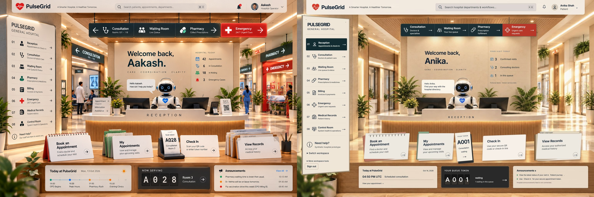
Historical source: ../phase9-fidelity/directory-consultation-1536.jpg · Original reference
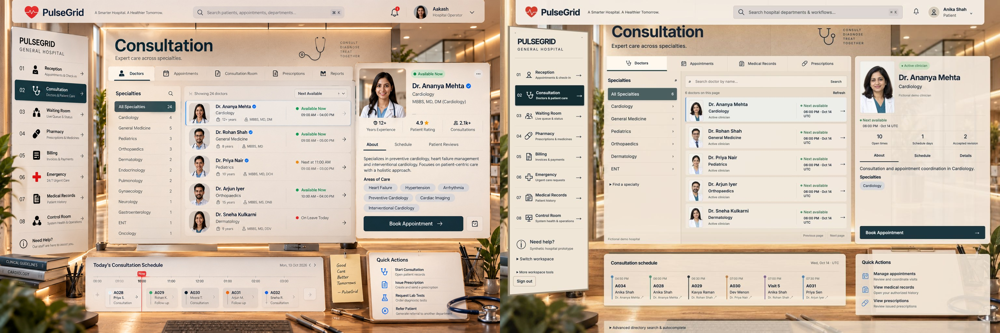
Historical source: ../phase9-resume/appointments-final-1536.jpg · Original reference
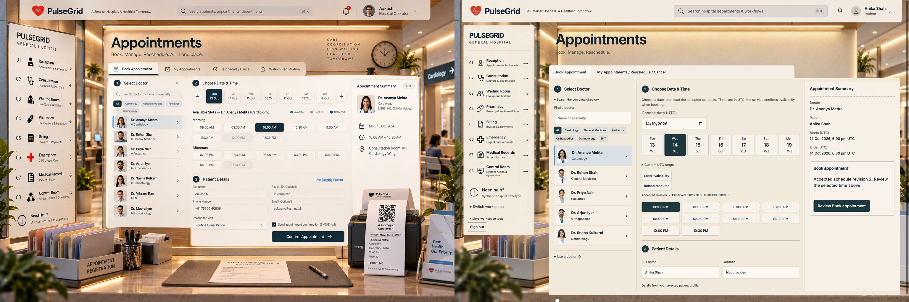
Historical source: ../phase9-resume/my-appointments-1536.jpg · Original reference
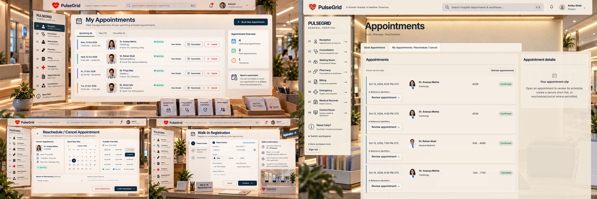
Historical source: ../phase9-fidelity/waiting-after-1536.jpg · Original reference
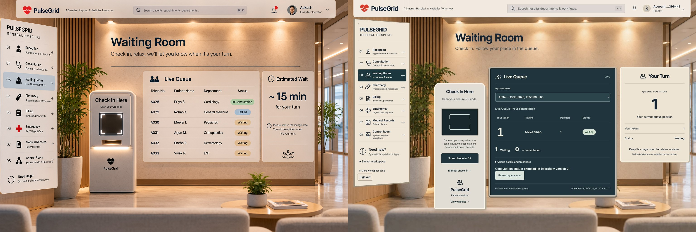
Historical source: ../phase9-fidelity/pharmacy-pharmacist-after-1536.jpg · Original reference
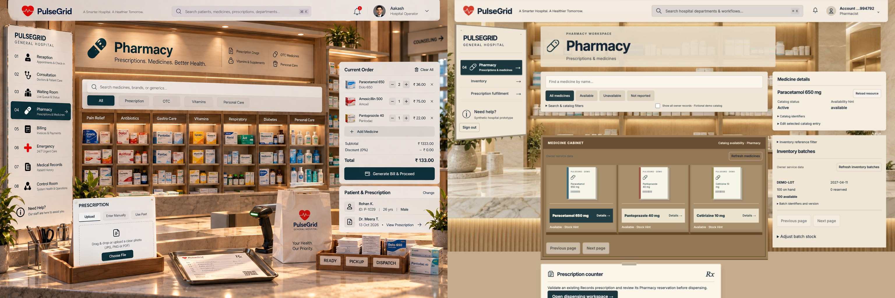
Historical source: ../phase9-resume/pharmacy-patient-final-1536.jpg · Original reference
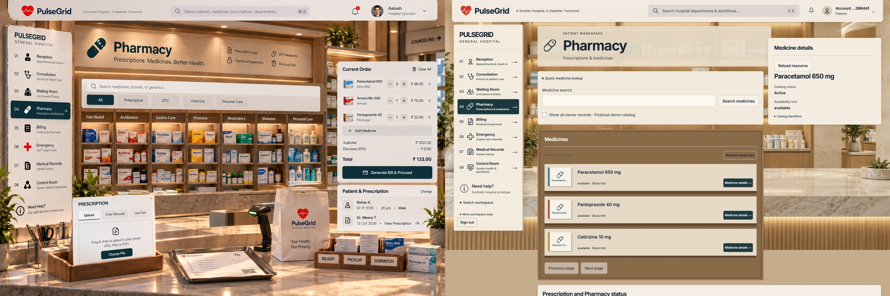
Historical source: ../phase9-resume/billing-price-book-1536x1024.jpg · Original reference
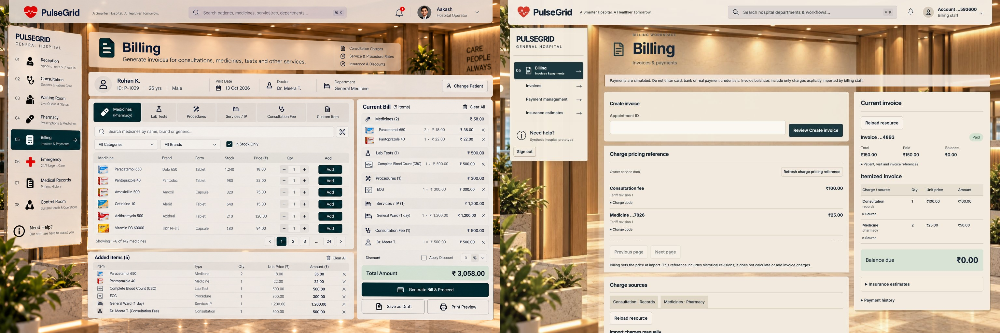
Historical source: ../phase9-resume/emergency-staff-1536.jpg · Original reference
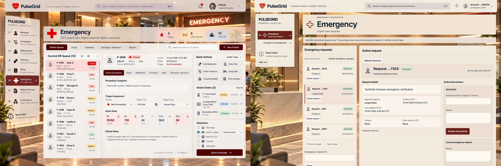
Historical source: ../phase9-resume/records-visit-prescription-1536x1024.jpg · Original reference
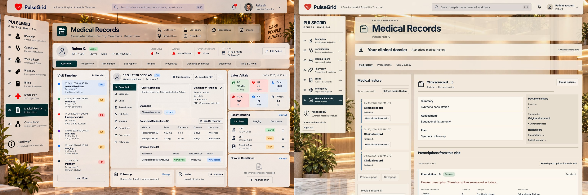
Historical source: ../phase9-resume/control-room-1536.jpg · Original reference
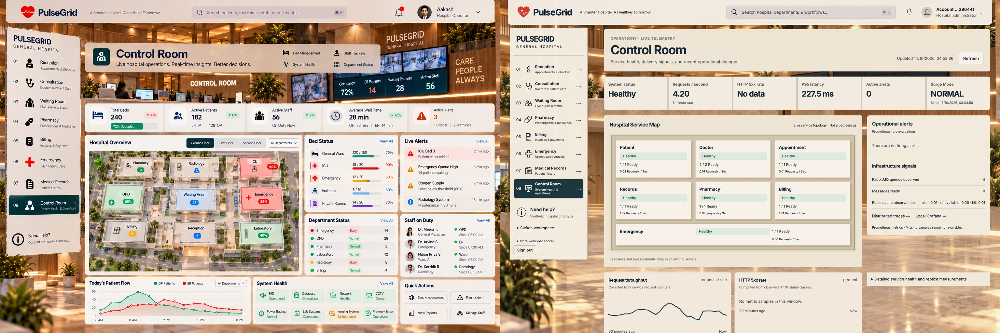